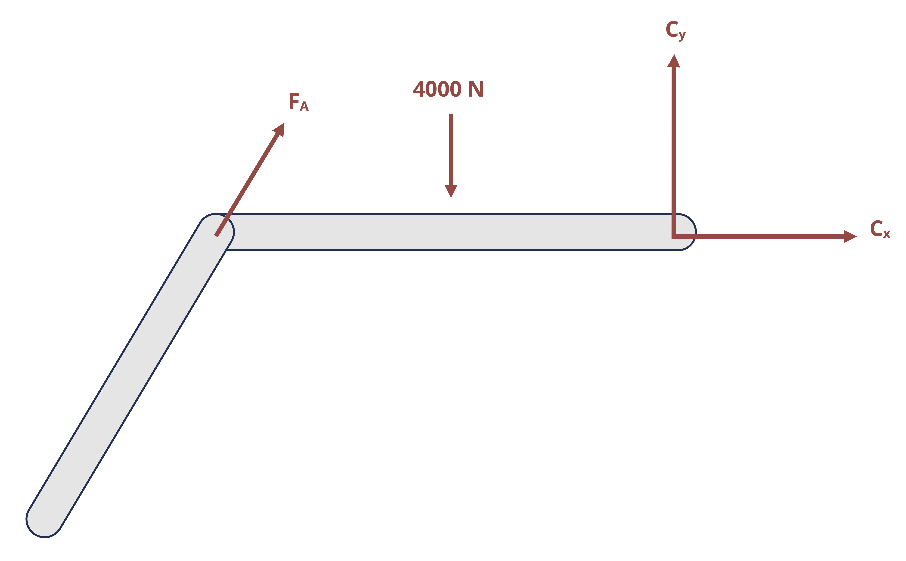

1 Statics Review
Introduction
Click to expand
Like in Statics, all bodies and structures discussed in this text will be assumed to be in static equilibrium. Unlike Statics, which assumed that all bodies were rigid, bodies in this text are deformable. In order to determine how an applied loading situation affects any given body or structure, and potentially causes it to deform, we must start by applying statics to establish the distribution of forces and moments within the body. This will be the first step of many problems. This chapter will present a review of those aspects of statics concepts that will be prevalent throughout this course.
External forces and moments are the forces and moments that act on the boundaries of a system. They are the loads that are applied arbitrarily (weight, wind, pressure, etc.), as well as the reactions they induce in the supporting elements (pins, rollers, welds, etc.). In the case of external reactions, the word “reaction” refers to the forces and/or moments exerted by the supports on the body in reaction to the other loading in order to keep the body in equilibrium.
Finding the external reactions will be the first step of many of the types of problems that will be covered in this text. This process will entail first drawing a free body diagram (FBD) of the body, or a sketch of the body freed from its supports, which shows the applied and reaction forces and moments. The reactions that correspond to the most common supports are illustrated below in Table 1.1
| Support | Reactions | Free body diagram |
|---|---|---|
| Pin | Force acting in an unknown direction. Since the direction is unknown, show as x and y components on the FBD |  |
Normal supports (including rollers, rockers, and smooth contact surface) |
Force in the direction normal to the support. Since the direction is known (normal to the support), show as total force in the known direction. |  |
| Cables | Force in the direction of the cable. Should always be drawn in tension. |  |
| Fixed support | Force in an unknown direction (so draw x and y components of force) as well as reaction couple moment |  |
Notice that while pins and fixed supports react with a force in a specific direction, both the magnitude and direction of the force are unknown until equilibrium equations are applied to solve for them. Instead of expressing the components of the unknown F in terms of the unknown θ, the reactions are normally shown as the components Fx and Fy. Once they are found, the overall magnitude of the force in the pin and its direction can be calculated \(\left(F=\sqrt{F_x^2+F_y^2}, \tan \theta_x=\frac{F_y}{F_x}\right)\).
Section 1.1 reviews equilibrium of members and frames in two dimensions, including the analysis of two-force members and multi-force members.
Section 1.2 addresses internal loads, including normal force, shear force, and bending moment.
Section 1.3 reviews equilibrium in three dimensions.
1.1 Equilibrium in Two Dimensions
Click to expand
Once the FBD is drawn, the next step is to apply the equilibrium equations. In two dimensions (x-y plane), these are:
\[ \boxed{\sum F_x=0 \quad \sum F_y=0 \quad \sum M_{any~point}=0} \tag{1.1}\]
Since there are three equations, a statically determinate problem should have no more than 3 unknowns.
Example 1.1 illustrates the process of finding external reactions.
Example 1.1
A 3 ft beam is supported by a pin connection at the wall at point A and a cable at point C as shown. A load is applied 2 ft away from point A. Find the force in pin A as well as the tensile force in the cable.

Step 1: Draw the FBD
Note that a guess needs to be made for the positive or negative sense of Ax and Ay, but the tensile force from a cable should always be shown to pull away from the body. The correct sense of Ax and Ay will be determined by obtaining positive or negative answers for the values. A positive answer means the direction was correctly assumed and a negative answer means the force should be in the opposite direction.

Step 2: Apply equilibrium equations
Starting with the moment about A will eliminate two unknowns from the equation so that tensile force T can be solved for. Then substitute the result from T into the other two equations to find Ax and Ay.
\[ \begin{aligned} & \sum M_A=T \sin (30^{\circ}) * 3{~ft}-1,200{~lb }*2{~ft}=0 \quad\rightarrow\quad T=1,600 {~lb} \\ & \sum F_x=-A_x-T \cos (30^{\circ})=0 \quad\rightarrow\quad A_x=-1,384.6{~lb} \\ & \sum F_y=A_y+T \sin (30^{\circ})-1200{~lb}=0 \quad\rightarrow\quad A_y= 400{~lb} \end{aligned} \]
Since a negative answer was obtained for Ax, that force actually acts in the positive x direction.
The total force in pin A is then \(F_A=\sqrt{A_x^2+A_y^2}=1,441{~lb}\)
Answer: T = 1,600 lb, FA = 1,441 lb
1.1.1 Two Force Members
One special type of pin connection for which the direction of the reaction force is known is one in which the pin is connected to a two-force member. Contrary to the name, a two-force member is not necessarily a member on which only two forces are applied, but rather it is a member on which forces are applied at only two locations. A two-force member can be any shape, as is demonstrated in Figure 1.1. One easy way to recognize a two-force member is to note the presence of only two connection points (such as two pins) but no other locations at which a force or moment couple is applied. Once a member is recognized to be a two-force member, it can be concluded that the resultant force at both connection points will be equal in magnitude (so FA = FB in Figure 1.1) and opposite in direction and follow a line of action that goes through the connections. For a straight member, it can also be concluded that the force within the two-force member (internal reaction as will be discussed in Section 1.1) is equal to the reaction force in the pin.

The presence and recognition of two force members can make some otherwise statically indeterminate problems become statically determinate. This is demonstrated in Example 1.2 below.
Example 1.2
Determine the force in pin C and in pin A.

Step 1: Draw the FBD

Based on this FBD, it appears that there are 4 unknowns and therefore not solvable by just 3 equilibrium equations. However, recognizing that bar AB is a two-force member (since there is a pin at A and a pin at B but no other forces acting on that bar), it can be taken as known that the line of action of the reaction force at A goes through points A and B. Thus, the FBD can be redrawn with just 3 unknowns:

Step 2: Apply equilibrium equations
\[ \begin{aligned} & \sum M_C=F_A \cos \left(50^{\circ}\right)*(5{~m}) \sin \left(50^{\circ}\right)-F_A \sin \left(50^{\circ}\right) *\left(4{~m}+5{~m}\left(\cos \left(50^{\circ}\right)\right)-4,000{~ N}*2{~m}=0\right. \\ & \sum F_x=F_A \cos \left(50^{\circ}\right)+C_x=0 \\ & \sum F_y=F_A \sin \left(50^{\circ}\right)-4,000{~N}+C_y=0 \end{aligned} \]
Solving (1) for FA yields FA = 2,611 N
Substituting this result into (1) and (2) yields Cx = - 1,678 N and Cy = 2,000 N
\[ F_C=\sqrt{C_x^2+C_y^2}=2,611{~N} \]
Recall that, for rigid bodies, forces may be slid along their line of action. We could slide force \(F_A\) to point B. Doing so simplifies our moment equation since the horizontal component of \(F_A\) now acts through point C.
\[ \sum M_C=-F_A \sin(50^\circ)*4{~m}+F_A \cos(50^\circ)*0+4,000{~N}*2{~m}=0 \]
This gives us the same result of \(F_A=2,611{~N}\) and the rest of the problem proceeds the same way.

Answer: FA = 1,155 N and FC = 1,155 N
1.2 Internal Reactions
Click to expand
Internal reactions can refer to forces and moments at connection points between members (such as a pin connecting multiple members of a frame, machine, or truss), as well as to reactions at any point in a continuous body (for example a point in the middle of a beam). These reactions are the forces and/or moments necessary to hold a structure or a body together and are ultimately the aspect of loading that is needed to determine if and how a body will deform or even break.
1.2.1 Internal reactions at a connection with two force members
Pins that connect members can be represented on an FBD in the same way as pins that connect the structure to external supports. That is, the reaction would be drawn as the two components of the overall force. However, the connected members would be considered as separate bodies, as if the connecting pin were pulled out and the members separated. The pin reactions would then be drawn on the FBD for each separated member. Since the pin would exert equal and opposite forces on the connected members, one needs to be careful to show the reaction forces in opposite directions on the FBD’s of those members. All three equilibrium equations can be applied separately to each member so one could theoretically solve for 3 times the number of unknowns as separate FBD’s drawn.
However, just as was discussed above, when one of the connected members is a two-force member, the reaction at the pin will be known to follow a line of action that goes through the points of application of the forces on the two-force member. Example 1.3 demonstrates these concepts.
Example 1.3
A plant hanger is secured to a wall with a pin and additionally supported by a brace that is pin connected to the hanger at B and to the wall at C. Determine the external reactions at A and C as well as the reaction in the internal pin B.

If we do not notice that BC is a two-force member, we would approach the problem by separating the brace from the hanger and drawing an FBD of each part separately. Notice that Bx and By are drawn in opposite directions in the two different diagrams since the pin will exert an equal and opposite force on each bar.

There are now 6 unknowns and 6 equilibrium equations (3 equations per body) available to use per bar, so the problem is technically solvable. However, since BC is a two force member (there is a pin force at B and a pin force at C but no other forces at any other point on the bar), it can be taken as known that the reaction force at B follows a line of action that goes through B and C. We can also conclude that the force in pin C is equal to the force in pin B. The FBD of bar AB can be redrawn:

With the components Bx and By replaced with the resultant force FB with known direction, the number of unknowns on bar AB is reduced to 3. These unknowns can be solved for using the equilibrium equations:
\[ \begin{aligned} & \sum M_A=F_B\left(\frac{4}{5}\right)*3{~ft}-50{~lb}*7{~ft}=0 \\ & \sum F_x=-A_x+F_B\left(\frac{3}{5}\right)=0 \\ & \sum F_y=A_y+F_B\left(\frac{4}{5}\right)-50{~lb}=0 \end{aligned} \]
Solving the equations (1)-(3) yields FB = 145.8 lb, Ax = 87.5 lb, and Ay = -66.7 lb. Therefore, the pin force in pin B is 145.8 lb and the pin force in A is \(\mathrm{A}=\sqrt{A_x^2+A_y^2}=110{~lb}\). Since BC is a two-force member, FC = FB.
Answer: FA = 110 lb, FB = FC = 146.8 lb
1.2.2 Internal reactions in truss structures
Truss structures are made up of only two force members. The two main methods of determining internal reactions in planar (2D) truss structures are Method of Joints and Method of Sections. In using Method of Joints, an FBD is drawn of the connecting pins (joints) within the truss. Since all the members connected at any given pin will be two-force members, the reactions can be drawn in known directions. However, since the forces all pass through the same point on the body, the moment equilibrium equation is not useful, so only the forces equilibrium equations can be used for each joint. This means that only two unknowns can be solved for at each joint. This method is most useful when the forces of all the truss members are sought or if the only forces sought are attached to a joint with only two members.
To use Method of Sections, a cut is made through the truss structure and analysis is based on the FBD of the intact part of the structure that is to the left of the cut or the intact part of the structure to the right of the cut. The FBD of either given side will show the applied forces and the reaction forces from the members that were cut through. These reactions will be equal in magnitude but opposite in direction between the two sides of the cut. The side to examine is usually based on which one will not require having to find external reactions (if there is a free end to the truss) and/or which one is least complicated to deal with in terms of geometry or applied loads. All three equilibrium equations can generally be effectively applied with Method of Sections, so three unknowns can be solved for with any given cut.
Example 1.4 demonstrates the use of both Method of Joints and Method of Sections to solve for forces in truss members.
Example 1.4
Determine the forces in members ED and EF. Let P1 = 8 kN and P2 = 12 kN.

With method of joints, we should always work with a joint that has no more than two unknown forces acting on it. These unknown forces come from either members attached to the joint or from external support reactions. Joint C is a good place to start here, as there are only two unknown forces: BC and CD.
FBD Joint C

Angle Θ can be found by setting up a right angle triangle at C with a base of 1 m and a height of 5 m. Once this angle is known, we can use equilibrium equations to find the forces in members BC and CD.
\[ \theta=\tan ^{-1}\left(\frac{5}{1}\right)=78.7^{\circ} \\ \\ \begin{aligned} &\sum F_y=C D \sin \left(78.7^{\circ}\right)-12=0 \quad\rightarrow\quad C D=12.2{~kN} \\ &\sum F_x=-B C-C D \cos \left(78.7^{\circ}\right)=0 \quad\rightarrow\quad B D=-15.3{~kN} \end{aligned} \]
Since the forces are shown to be tensile in the FBD (the forces are pointed away from the joint), the negative answer indicates that force BD is actually compressive.
Now that force CD is known to be 12.2 kN in tension, there are two remaining unknowns at joint D: BD and DE.
FBD Joint D

We know the 12.2 kN force is at angle Θ=78.7° from horizontal. Angle α can be found by considering right angle triangle BDE which has a base of 4 m and a height of 5 m. Once this angle is known, we can use equilibrium equations to find the forces in members BD and DE.
\[ \alpha=\tan ^{-1}\left(\frac{5}{4}\right)=51.3^{\circ} \\ \\ \begin{aligned} \sum F_y&=-12.2 \sin \left(78.7^{\circ}\right)-B D \sin \left(51.3^{\circ}\right)=0 \quad\rightarrow\quad B D=-15.3{~kN} \\ \sum F_x&=-D E-B D \cos \left(51.3^{\circ}\right)+12.2 \cos \left(78.7^{\circ}\right)=0 \\ &=-D E-(-15.3) \cos \left(51.3^{\circ}\right)+12.2 \cos \left(78.7^{\circ}\right)=0 \quad\rightarrow\quad D E=12{~kN} \end{aligned} \]
Force BD is 15.3 kN in compression and force DE is 12 kN in tension. Now we need to find force BE. There are two remaining unknowns at joint B: AB and BE.
FBD Joint B

\[ \sum F_y=B E-8-15.3 \sin \left(51.3^{\circ}\right)=0 \quad\rightarrow\quad B E=20{~kN} \]
Answer: DE = 12 kN (Tensile), BE = 20 kN (Tensile)
While Method of Joints can be used here, it is inefficient. We needed to draw and analyze free body diagrams of joints C, D, and B and keep track of the forces at these joints as well as whether each force was in tension or compression.
Method of Sections may be used as an alternative to find forces BE and DE. To apply Method of Sections, we should cut through no more than 3 unknown members and draw a free body diagram with no more than 3 total unknowns. For this problem, make a cut through the truss that passes through members AB, BE, and DE.

Once that cut is made, a choice needs to be made to draw an FBD for the intact part of the truss to the left of the cut or the intact part of the truss to the right of the cut Either way, the external forces on the side would need to be shown on the FBD as well as the force of each member that was cut through.
If we chose the left side, there would be unknowns AB, BE, and DE, as well as unknown reactions Ax, Fx, and Fy. However, on the right side there are no unknown support reactions so the only unknowns are forces AB, BE, and DE.

\[ \begin{aligned} & \sum M_B=-(12*5)+(DE*5)=0 \quad\rightarrow\quad D E=12{~kN} \\ & \sum F_y=BE-8-12=0 \quad\rightarrow\quad B E=20{~kN} \end{aligned} \]
Once again, the forces are drawn on the FBD in the tensile direction, so the positive answers indicate the forces are indeed tensile.
Answer: DE = 12 kN (Tensile), BE = 20 kN (Tensile)
1.2.3 Internal reactions in continuous bodies
Internal reactions also exist within a body or structure. These reactions are necessary to hold the body together and will vary from point to point in a body depending on the distribution of external loading. As shown in Figure 1.2, the reactions at any given point can be examined by making a cut at the point of interest in the body. One can think of any point within a body as acting as a fixed support for the rest of the body. That is, every point must potentially exert a force parallel to the cross section where the cut is made which is the shear force V, a force perpendicular to the cross section where the cut is made which is the normal force N, and a reaction moment where the cut is made which is the bending moment M. Moreover, as was discussed for internal pin reactions and the cut made for Method of Sections for trusses, the reactions at a cut will be equal and opposite on the two sides of the cut.

To determine the reactions, the FBD of the part of the beam to the left of the cut can be drawn and used, or the part of the beam to the right of the cut can be drawn and used. As was discussed with Method of Sections for trusses, the choice of which side of the cut to examine is based primarily on which side appears easiest and most efficient to analyze. Once the FBD of the cut section is drawn, the three equilibrium equations can be applied to determine the internal reactions. The determination of shear and bending moments in beams will be reviewed in more detail in Chapter 7. The focus of Example 1.5 is on the determination of the normal force, as this will be important in Chapter 2 and Chapter 3.
Example 1.5
Two solid bars make up the axial assembly loaded as shown. Determine the normal force in each bar. State whether the force is tensile or compressive.

Though the assembly is not a beam, determining the internal reactions will work in the same way. In this particular case, all the forces are in the normal direction (no shear force) and due to the central placement of the 60 kN force and the symmetry of the 125 kN forces, there will be also be no bending moment. Consequently, only the normal reaction force will be drawn on the FBDs.
To find the internal load in a segment, cut a cross-section within that segment. Since the external loading (and therefore the internal loading) changes at point B, we’ll make one cut in segment AB and another in segment BC.
Making the cut in section AB and drawing the FBD allows us to determine the normal force in section AB. Note that drawing the left section of the cut for the FBD results in avoiding needing to know the external reactions at wall C.

\[ \sum F_x=-50{~kN}+N_{AB}=0 \quad\rightarrow\quad N_{AB}=50{~kN} \]
Making the cut in section BC and drawing the FBD allows us to determine the normal force in section BC. Once again, drawing the left section of the cut for the FBD results in avoiding needing to know the external reactions at wall C.

\[ \sum F_x=-50{~kN}+180{~kN}+N_{BC}=0 \quad\rightarrow\quad N_{BC}=-130{~kN} \]
For both AB and BC, the internal normal force was assumed tensile in the FBD and equilibrium equation. In the case of NAB, the positive answer confirms that it is tensile. In the case of NBC, the negative answer reveals that it is compressive.
Answer: NAB = 50 kN (T), NBC = 130 kN (C)
1.3 Equilibrium and Reactions in Three Dimensions
Click to expand
Because real life structures will be subject to forces and moments in all directions, we will also see problems in which it will be necessary to consider 3 dimensional forces and 3 dimensional moments.
For 3D systems, there are 6 total scalar equilibrium equations:
\[ \boxed{\begin{array}{ll} \sum F_x=0 & \sum M_x=0 \\ \sum F_y=0 & \sum M_y=0 \\ \sum F_z=0 & \sum M_z=0 \end{array}} \tag{1.2}\]
Note that the moment vector describes the axis around which the body tends to rotate. Each individual component represents the tendency of the body to rotate around the specified axis. In 3D, there are three internal forces and three internal moments (Figure 1.3). There is one normal force (Nx) perpendicular to the cross-section and two shear forces (Vy and Vz) parallel to the cross-section. There are two bending moments (My and Mz) which act around the axes parallel to the cross-section and one torsional moment (Tx) which acts around the axis perpendicular to the cross-section. We will study each of these loads in detail over the next few chapters.

Note that the choice of coordinate system here is arbitrary. Loads are defined as normal, shear, bending, or torsion based on how they act relative to the cross-section. For example, the normal force may act in the y-direction depending on how the cross-section is cut, and the torsional moment would then act around the y-axis.
While summing the reaction forces in 3D is a straight-forward process of adding forces in each direction, summing moments in 3D can prove to be more complicated. To sum moments, there are generally two options. One option is to use the cross product to calculate moments: \(M=r \times F\)
In the cross-product equation, r is the position vector from the point the moment is about to any point on the line of action of the force. Using the cross product to calculate moment will result in a vector expression for the moment equation that gives all three components at one time with the correct signs to indicate clockwise (negative) or counterclockwise (positive) rotation.
The second option to calculate moments is to perform scalar calculations in which the sum of the moments about the x, y, and z axis is calculated individually. To use this option, it might be helpful to recall:
The general scalar equation for moment is M = F*d, where d is the perpendicular distance from the axis of rotation at the point the moment is being taken about to anywhere on the line of action of the force. One can also use M = F r sin α where r is the distance from the point to any point on the force and α is the angle between the position vector r (that corresponds to the magnitude r used) and the force vector.
Forces do not cause moments about points they go through or axes they act through.
Forces do not cause moments about axes they are parallel to (i.e., Fx wouldn’t cause a moment around an x-axis no matter where the point is).
When taking the moment about a point, the origin of the coordinate axes should be moved to that point for the purpose of determining the distance between the axis and the force.
Given all the reminders above, one can apply the following equations:
\(\sum M_x= \pm F_y * z \pm F_z * y\) where z and y are the respective distances from the x-axis at the point in question to Fy and Fz components of the force respectively.
\(\sum M_y= \pm F_x * z \pm F_z * x\) where z and x are the respective distances from the y-axis at the point in question to Fx and Fz components of the force respectively.
\(\sum M_z= \pm F_x * y \pm F_y * x\) where y and x are the respective distances from the z-axis at the point in question to the Fx and Fy components of the force respectively.
The ± is decided based on the right-hand rule (see text below for guidance) or visual inspection. When using visual inspection, the direction of rotation is judged by looking from the positive end of the axis towards the negative end. A counterclockwise rotation is considered to be positive and a clockwise rotation is considered to be negative.
To apply the right-hand rule:
Orient your right hand so that the fingers are aligned with the moment arm with the palm at the point and the fingertips extending towards the force. The moment arm is the axis along which the perpendicular distance to the axis would be determined. For example, if finding Mx due to Fy, the moment arm is in the z direction.
The thumb is aligned with the axis of rotation (axis around which the moment is being calculated).
Curl your fingers in the direction of the force. If your thumb must be pointed in the positive axis direction to perform this action, the moment is counterclockwise. If your thumb must be pointed in the negative axis direction, the moment is clockwise. Typical convention designates counterclockwise rotation to be positive and clockwise to be negative.
These concepts are further reviewed in Example 1.6.
Example 1.6
Determine the internal reactions at point P, located at the center of the cross-section of the rectangular bar and 1.75 ft from the fixed support, if F = -150i - 225j + Fz = 300k lb.

To determine the internal reactions at P, a cut is made at P that is parallel to the cross section. Since the left side of the cut would include the wall but the right side of the cut would be free with no external reactions to determine, the right side section will be used.

The force reactions at P will just be equal (but opposite in direction) to the force shown since there is only one. The moment reactions can be found by taking the moments about point P.
The moment about the x axis at point P is:
\[ \sum M_{Px} = \pm ~F_yz \pm F_zy = 0 = -[(225{~lb})(3{~in})(\frac{1{~ft}}{12{~in}})]+[(300{~lb})(2{~in})(\frac{1{~ft}}{12{~in}})]+M_{px} -6.25{~lb·ft} \]
The moment about the y axis at point P is:
\[ \sum M_{Py} = \pm ~F_xz \pm F_zx = 0 = -[(150{~lb})(3{~in})(\frac{1{~ft}}{12{~in}})]-[(300{~lb})(1.25{~ft})]+M_{py} -347.5{~lb·ft} \]
The moment about the z axis at point P is:
\[ \sum M_{Pz} = \pm F_xy \pm F_yx = 0 = [(150{~lb})(2{~in})(\frac{1{~ft}}{12{~in}})]-[(225{~lb})(1.25{~ft})]+M_{pz} -2.5{~lb·ft} \]
The sign on the individual multiplicative terms in each equation are determined by right hand rule or visualization.
Answer:
Px = 150 lb
Py = 225 lb
Pz = 300 lb
MPx = 6.25 lb·ft
MPy = 348 lb·ft
MPz = 2.5 lb·ft
Summary
Click to expand
References
Click to expand
Figures
Table 1.1: Free body diagrams for common supports. Kindred Grey. 2024. CC BY-NC-SA.
Example 1.1: Kindred Grey. 2024. CC BY-NC-SA.
Figure 1.1: Illustrations of two force members showing the line of action of the reaction force passing through the joints. Kindred Grey. 2024. CC BY-NC-SA.
Example 1.2: Kindred Grey. 2024. CC BY-NC-SA.
Example 1.3: Kindred Grey. 2024. CC BY-NC-SA.
Example 1.4: Kindred Grey. 2024. CC BY-NC-SA.
Figure 1.2: Cross-sections showing the internal loads on a continuous body. Kindred Grey. 2024. CC BY-NC-SA.
Example 1.5: Kindred Grey. 2024. CC BY-NC-SA.
Figure 1.3: In 3D there are three internal forces (normal force Nx and two shear forces Vy and Vz) and three internal moments (torsional moment Tx and two bending moments My and Mz). Kindred Grey. 2024. CC BY-NC-SA.
Example 1.6: Kindred Grey. 2024. CC BY-NC-SA.